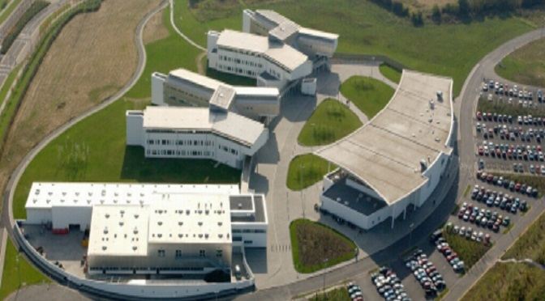
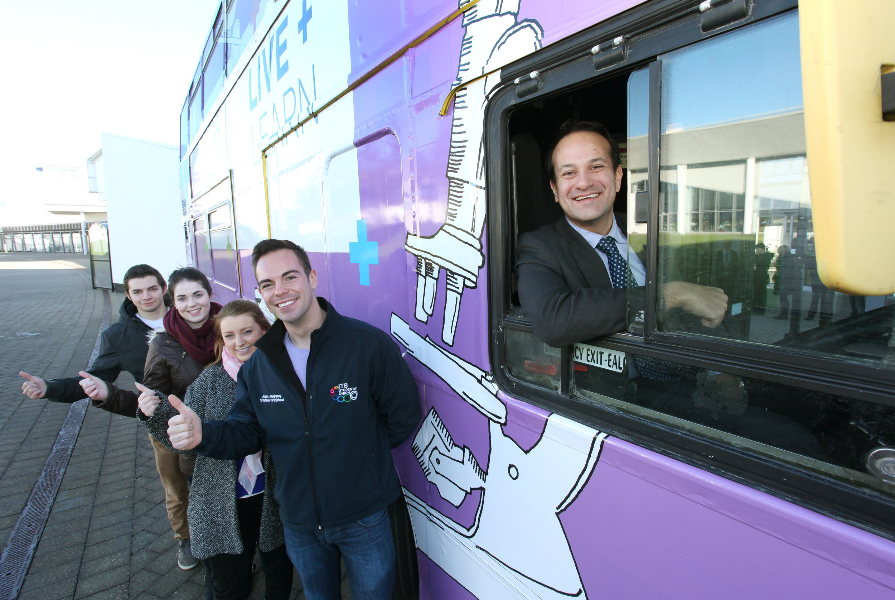
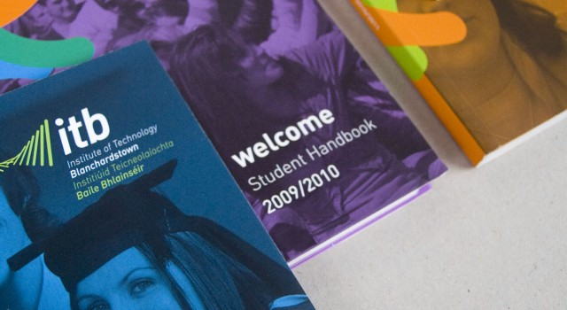

Institute of Technology Blanchardstown
Institute of Technology, Blanchardstown (ITB) was established in 1999, is a third-level institution, and a future constituent institute of Technological University Dublin.

The Buildings
ITB Campus is made up of 7 different blocks, some of which are newer than others. A Block was ITB's first building, opened September 1999, containing computing and engineering laboratories, three large lecture theatres and offices for Academic Administration.
The LINC Building & B Block were built May–October 2001, initially for workshops, and now hosting small business ventures and supporting college-industry links.
C Block is home to the newely refurbished Canteen since 2018, medical centre, Students' Union, sports hall and gym.
D Block has facilitated various Apprentice workshops during ITB's history.
E Block is a two-wing building containing classrooms, science laboratories, language laboratories, and two large lecture theatres.
F Block is the current official entry point, this holds the reception, Marketing and senior management offices, and the largest lecture theatre.

Milestones
Opening in 1999, with imput from Bertie Ahern. The entire campus, all buildings, were fully opened in 2004. The launch of Creative Digital Media in 2009 with a bebo page. in 2009 ITB was officially open 10 years! in 2012 the alliance for TU Dublin began, starting the biggest step forward.

Socials&Branding
The ITB Logo was designed in 1999 and redesigned in 2006 to the current branding. During the snow of 2010, ITB created a Twitter page to inform those of the college closing, a social media heavily used to this day. The Newest logo will be in place frm January 2019.